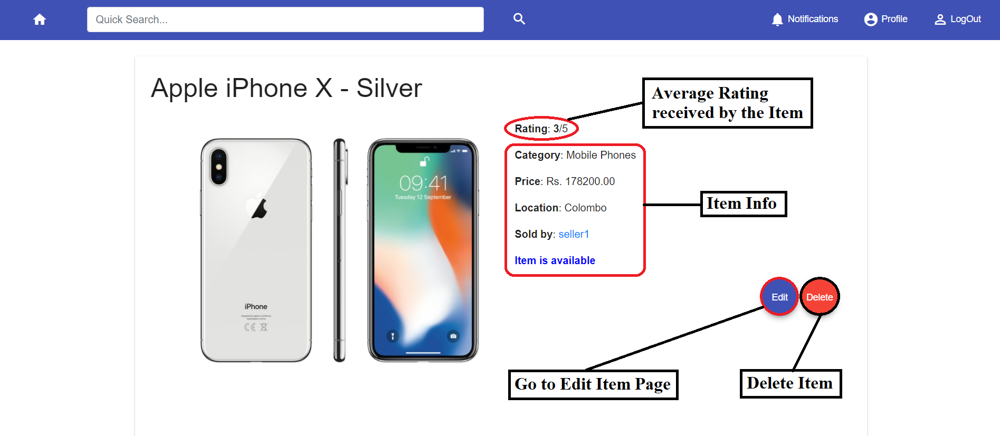
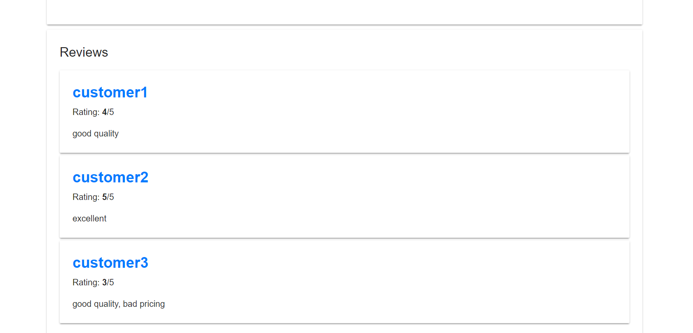
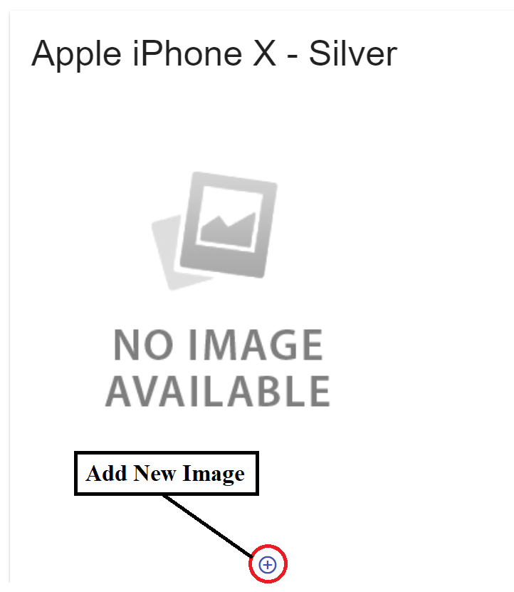
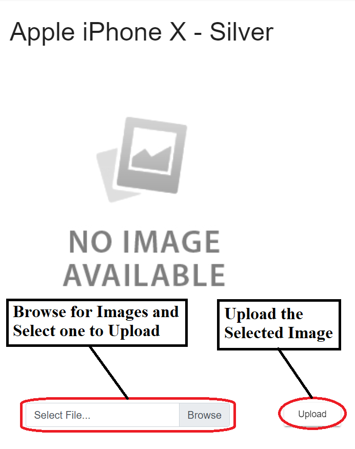
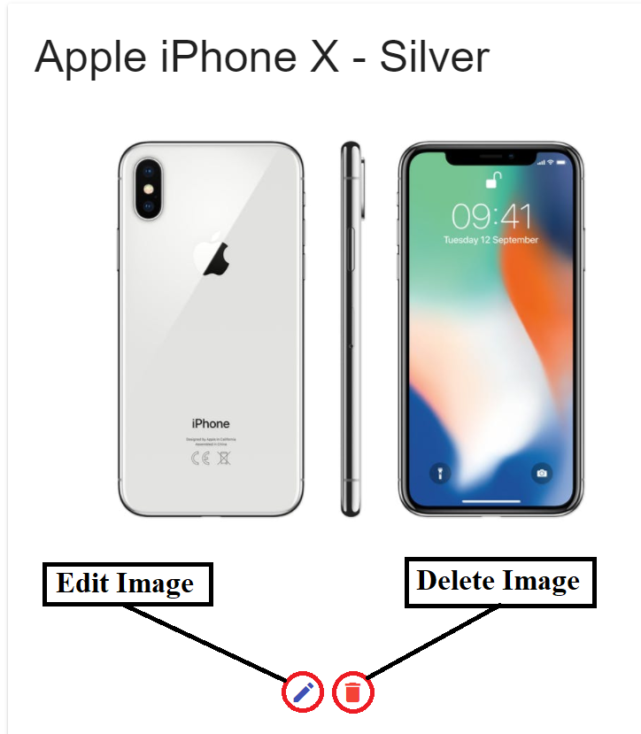

<div class="container">
  <mat-card style="margin: 15px 0">
    <h3>View and Edit Items/Services you have added for sale</h3>

    <hr>

    <p><strong>This can be done only if you are registered as a seller and the item/service is published by you for
      sale.</strong></p>

    <ul>
      <li>
        <h5>View Item</h5>
        <p>Select the item by <a [routerLink]="['/help/helpsearch']">searching</a> for the item or through your <a
          [routerLink]="['/help/helpprofile']">profile</a> page.</p>
        <p>Click the "Edit" button if you want to edit the item and "Delete" button if you want to delete the item.</p>
        
      </li>

      <br>
      <br>

      <li>
        <h5>View the reviews on the item</h5>
        <p>Scroll down the item's page.</p>
        
      </li>

      <br>
      <br>

      <li>
        <h5>Add/Change the image of the item</h5>
        <ol>
          <li>
            <p>Bring the mouse over the item's image area, and click the "Add new profile picture button".</p>
            
          </li>

          <br>

          <li>
            <p>Click the browse button, browse for an image, select the image and click the "Upload" button.</p>
            
          </li>

          <br>

          <li>
            <p>After uploading, the profile picture can be edited (the same way as adding) or deleted.</p>
            
          </li>
        </ol>
      </li>
    </ul>

    <br>
    <br>

    <h5><strong><em>The procedure will be identical for a Service.</em></strong></h5>

    <div style="width: 100%; text-align: right; margin-top: 25px">
      <a [routerLink]="['/help']">
        <mat-icon style="vertical-align: middle">arrow_back</mat-icon>
        Back to Help</a>
    </div>
  </mat-card>
</div>
